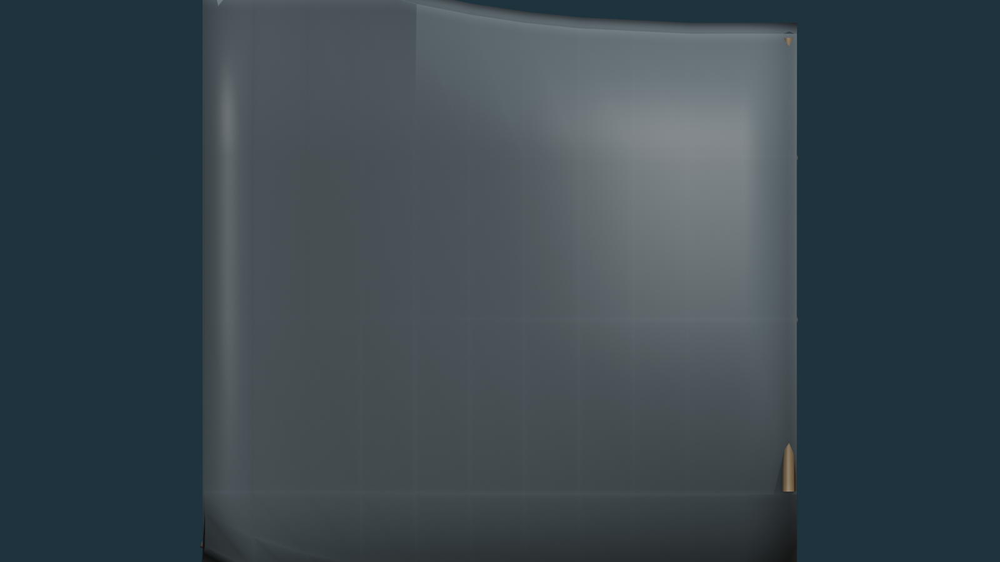
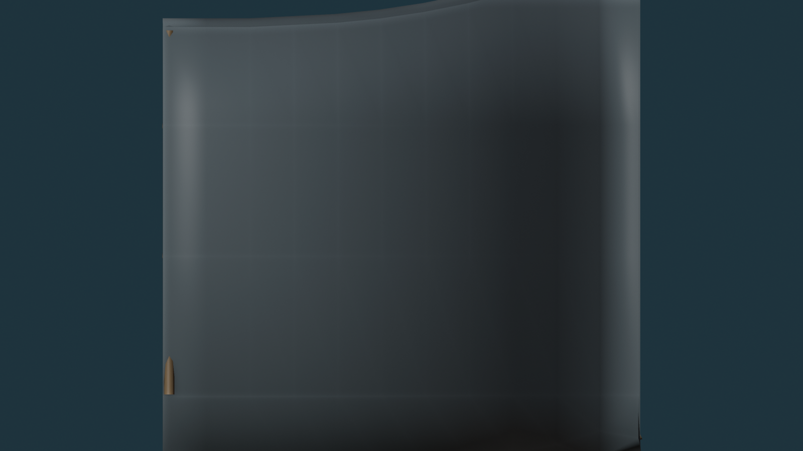
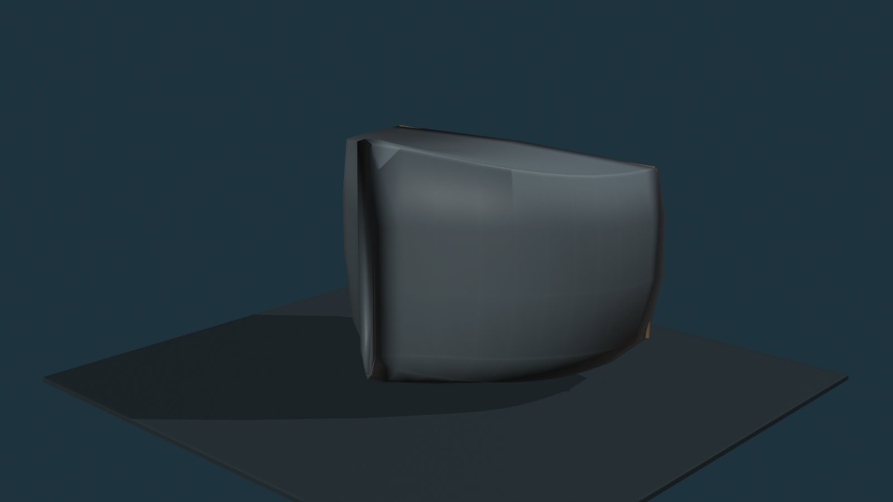

RED = remove hull plating / open field
CYAN = preserve intact
YELLOW = expose structural rib/stringer
ORANGE = peel / tear direction
Damage intent: major readable plating loss, not scattered bullet-hole damage. Keep the bow stem, keel/lower silhouette, and A/B connection structurally legible. The red zones are intended as broad missing-shell fields with irregular surviving islands and torn partial edges—not clean cutouts.
Port Side — Primary Damage Plan

Port: one dominant mid-side plating-loss field plus a lower/aft tear. Two major ribs should remain visible through the open field. Stem and lower keel line stay intact.
Starboard Side — Primary Damage Plan

Starboard: one large aft/upper plating-loss field and one forward tear. Three ribs should show through. Keep the outer stem and lower silhouette readable.
Three-Quarter Context

Context only. Use the orthographic side maps above as the actual placement authority.
Proposed structural rules if this map passes:
The damage will be built from the Gate-A hull itself. Major red fields become actual missing plating; ribs/stringers remain precision Blender structure behind them; torn lips are partial and derived from the exact hull boundary; Meshy is used only for small attached remnants/debris after the structural loss matches this map.
Current Gate
PASS / FAIL / mark changes on the 2D damage layout only. Once this map passes, the next Gate-B build will follow these zones instead of improvising damage in 3D.